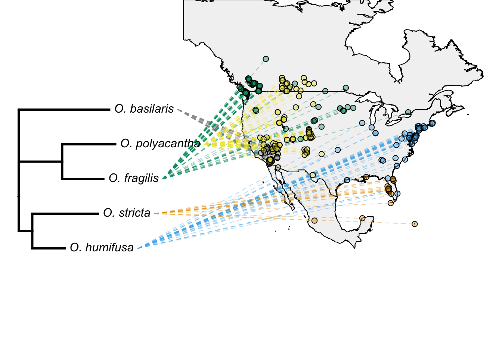

In Labs 7 and 9 we learned how to map species distributions using GBIF data, and how to create phylogenies from DNA sequence data from GenBank. In this final R assignment, we’ll combine these methods to create a phylogeographic map of five Opuntia species. By overlaying a phylogeny onto a species distribution map, we can not only better test taxonomic and evolutionary relationships, but also infer migration and colonization histories.
Before starting this week’s tutorial you will have:
completed R Assignment 2 (Mapping) and Assignment 4 (Phylogenetics),
completed some pre-assignment reading on the use of phylogeography in plant taxonomy,
more…
By the end of this tutorial you will have:
the ability to combine distribution data from GBIF with sequence data from Genbank to create phylogeographic maps of species distributions,
more…
In previous Assignments we mapped species distributions and constructed phylogenetic trees. In this Assignment, we’ll combine both lines of research to simultaneously visualize the phylogenetic and geographic relationships of five Opuntia species.
In this lab, we’ll explore further the genus Opuntia:
Opuntia basilaris (Mojave, Colorado, Utah)
Opuntia fragilis (Northwestern)
Opuntia humifusa (Eastern)
Opuntia polyacantha (Great Plains, foothills of Rocky Mtns)
Opuntia stricta (Gulf Coast and Caribbean)
Let’s start by installing the necessary packages. mapdata is an slightly more sophisticated package than mapr (which we used in Lab 7) — this will allow us to overlay a phylogeny onto a biogeographic plot. phytools is a similar phylogenetics package to ape (Lab 9), but contains functions for overlaying phylogenies onto maps. viridis is a package for creating custom colour schemes — our maps gotta look fresh!
Attach the packages:
# attach packages once they are installed
library(here)
library(mapdata)
library(phytools)
library(tidyverse)
library(viridis)Let’s import our species distribution data (from GBIF, Assignment 2) and phylogenetic tree (Assignment 4):
# import Opuntia rbcL tree from last tutorial
rbcL_rooted <- readRDS(file = here('R_scripts/rbcL_rooted.rds'))
# import filtered GBIF data from last tutorial
opuntia_fil <- readRDS(file = here('R_scripts/filtered_gbif_dataset.rds')) Then, we’ll simplify the species names in the GBIF dataset (this is required to use phytools). We can change the names of variables using the mutate() function:
opuntia_fil <-
opuntia_fil %>%
mutate(short_names = case_when(
name == "Opuntia basilaris Engelm. & J.M.Bigelow" ~ "O_basilaris",
name == "Opuntia fragilis (Nutt.) Haw." ~ "O_fragilis",
name == "Opuntia humifusa Raf." ~ "O_humifusa",
name == "Opuntia stricta (Haw.) Haw." ~ "O_stricta",
name == "Opuntia polyacantha Haw." ~ "O_polyacantha"
))Some more data organizing is needed.. we’ll reverse the order of the latitude and longitude columns in our GBIF dataset, and convert the tibble into a matrix (for phytools):
We’ll need to give each row (i.e. GBIF observation) a species name in order to overlay a phylogeny. Entries with missing information (NAs) also need to be removed:
# assign species names to rows
rownames(latlong) <- opuntia_fil$short_names
# removes rows with NAs
latlong <- na.omit(latlong)The species names need to match the exact spelling and format as in the phylogeny:
And each species needs a unique colour:
colours <-
setNames(c('#999999', '#E69F00', '#56B4E9', '#009E73', '#F0E442'),
rbcL_rooted$tip.label)obj <-
phylo.to.map(
rbcL_rooted,
latlong,
rotate = FALSE,
regions = c("Canada", "USA", "Mexico"),
database = "worldHires",
xlim = c(-135, -55 ),
ylim = c(10, 45),
asp = 4,
lwd = 1,
plot = FALSE)
plot(
obj,
direction = "rightwards",
colors = sapply(colours, make.transparent, 0.4),
pts = TRUE,
cex.points = c(0,1),
lwd = c(3,1),
asp = 1.3,
ftype ="i")